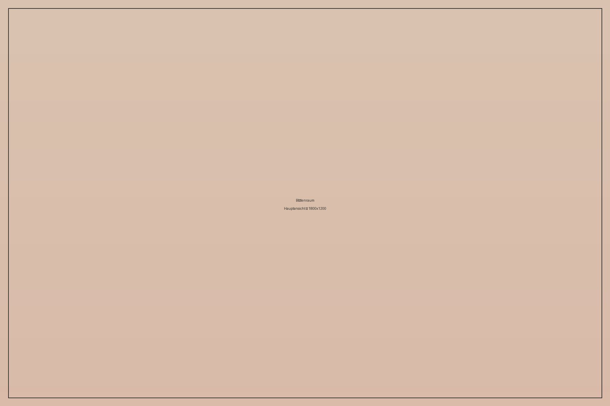
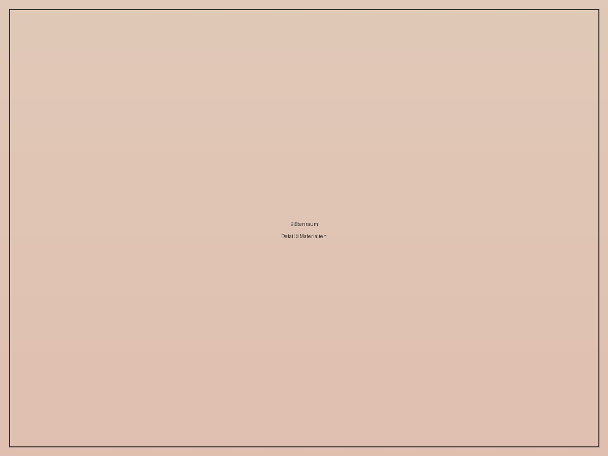
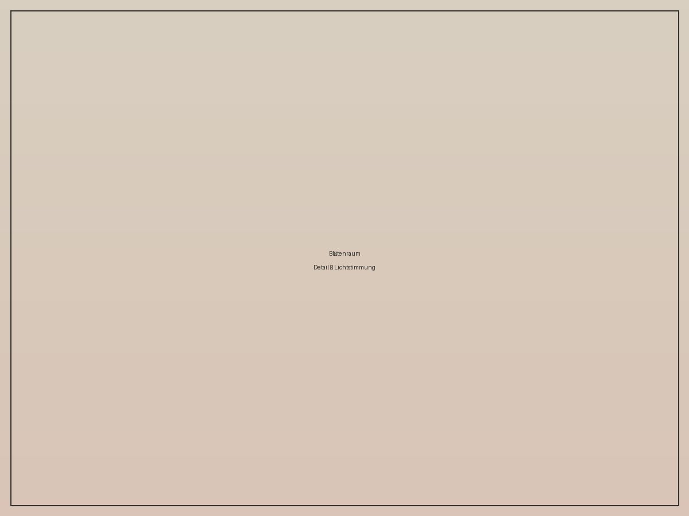

Interior
Blütenraum

Über das Projekt
Ein zurückhaltender Rückzugsort, gestaltet um natürliches Licht und blasse Rosé- und Cremetöne. Die Materialwahl folgt einem Prinzip: alles darf atmen.
Für dieses Projekt stand die Frage im Zentrum, wie viel Raum man weglassen kann, bevor ein Zimmer leer statt ruhig wirkt. Entstanden ist ein Konzept mit wenigen, sorgfältig gewählten Objekten, getragenen Texturen und einem bewusst schmalen Farbkorridor.

